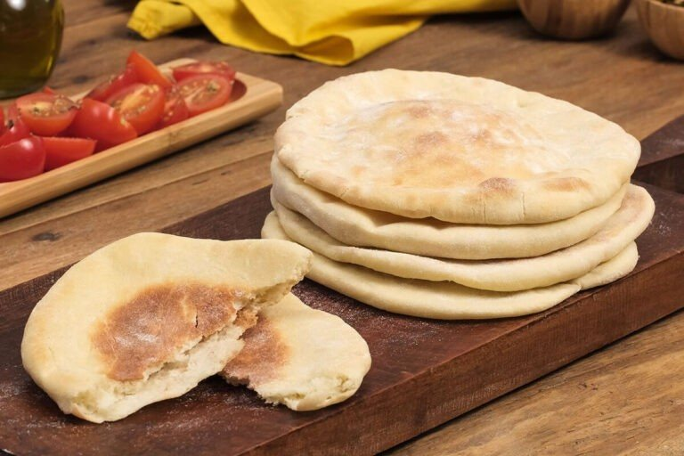

Salgados · Massas fritas/assadas
Pão sírio

Ingredientes
- 6 xícaras de farinha de trigo
- 1 tablete (15 g) de fermento para pão
- 2 xícaras de água morna
- 1 ½ colher (chá) de sal
- 1 colher (chá) de açúcar
- 2 colheres (sopa) de óleo
- Farinha de trigo para polvilhar
- Óleo para untar
Modo de preparo
- Preaqueça o forno em temperatura baixa (100 °C).
- Peneire a farinha numa tigela grande e deixe amornando no forno.
- Enquanto isso, dissolva o fermento em ¼ xícara de água morna. Junte a água restante, o sal e o açúcar, e misture bem.
- Retire a farinha do forno. Separe 2 xícaras da farinha e reserve. Faça uma depressão na farinha que restou na tigela e adicione o fermento misturando até obter uma pasta. Cubra com um pano e deixe descansar protegida do frio até que espume.
- Acrescente a farinha reservada à mistura da tigela, junte o óleo aos poucos e bata bem por 10 minutos.
- Coloque a massa sobre uma superfície polvilhada com farinha e amasse por 10 minutos, usando mais farinha, se necessário, até a massa ficar lisa por dentro e um pouco enrugada por fora.
- Forme uma bola com a massa e unte com óleo. Coloque numa vasilha, cubra com filme plástico e deixe crescer em lugar protegido por 1 hora.
- Abaixe a massa e coloque-a numa superfície polvilhada com farinha. Amasse por 1 minuto e forme 10 bolas iguais.
- Abra cada bola com 20 cm de diâmetro e coloque sobre um pano polvilhado com farinha. Cubra com outro pano e deixe descansar por 20 minutos. Preaqueça o forno em temperatura média (200 °C).
- Coloque os pães numa tábua. Unte uma assadeira com óleo e coloque na parte mais alta do forno preaquecido. Quando a assadeira estiver bem quente, coloque um pão. Asse durante 4 a 5 minutos ou até que o pão fique estufado.
- Retire o pão do forno e envolva com um pano limpo para manter quente e macio. Asse os outros pães da mesma maneira.
Observação
O fermento biológico fresco, para pães, pode ser congelado embalado em papel-alumínio; para descongelar, deixe em temperatura ambiente por 30 minutos ou rale-o ainda congelado (dura 3 meses). Congelamento: embale os pães com filme plástico e leve ao freezer até congelarem; passe para um saco plástico, retire o ar e vede bem; etiquete e congele. Descongelamento: em temperatura ambiente por 1 hora.